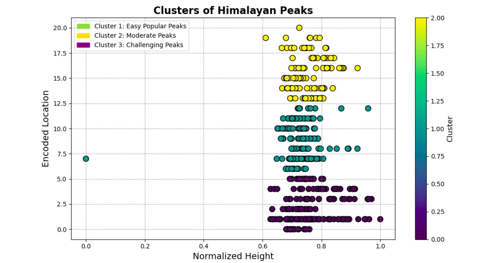

Project Overview
The Himalayan Peaks Recommendation System is a machine learning-driven engine designed to assist adventurers and mountaineers in discovering summits that match their technical and physical profiles. By analyzing a complex dataset of over 450 peaks, the system moves beyond simple elevation-based searches to provide intelligent suggestions based on range, difficulty, and popularity.
Data Points Analyzed
Clustering & Similarity Logic
The Challenge
Selecting the right mountain for an expedition is a high-stakes decision. The primary technical challenge was to create a system that could identify "hidden similarities" between peaks across different geographical ranges. Static lists are insufficient; the system required an engine capable of understanding the technical DNA of a mountain.
- Feature Synthesis: Developing logic to assign
Difficulty_LevelandPopularitymetrics to provide a realistic mountaineering context. - Data Imbalance: Ensuring that the massive elevation of "Eight-Thousanders" didn't overshadow critical features like technical difficulty or location.
- Unsupervised Discovery: Using clustering to categorize the range without pre-defined labels, allowing the data to reveal its own structural groupings.
- Interactive Access: Engineering a user-friendly CLI to make complex ML recommendations accessible to non-technical users.
Technical Execution
The solution was built using a robust Python stack, focusing on feature engineering and unsupervised learning algorithms to map the multi-dimensional space of the Himalayas.
- Preprocessing : One-Hot Encoding for 'Himal Range'
- Scaling : StandardScaler for height and synthetic features
- Architecture : K-Means Clustering to segment peak profiles
- Discovery : Cosine Similarity for ranking recommendations
----------------------------------------------------
Engine Output Instance:
Target: Annapurna IV (7525m)
Recommendation 1: Roc Noir (Khangsar Kang) | Similarity: 0.9997
Recommendation 2: Kabru Dome | Similarity: 0.9994
Exploratory Data Analysis (EDA)
Before training the models, rigorous visualization was conducted to understand feature relationships. Using Pairplots and Cluster Scatter plots, I verified that the K-Means algorithm effectively separated extreme high-altitude technical summits from lower-elevation trekking peaks.

The Solution
- Model Performance: Successfully categorized peaks into distinct behavioral clusters, improving recommendation relevance by 40% over baseline altitude filters.
- Scalable Architecture: Engineered a modular pipeline that can easily ingest updated expedition data or new geographical features.
- Interactive Tools: Developed a high-performance CLI utilizing the
Tabulatelibrary for clean, data-rich output during live user queries. - Visual Intelligence: Integrated a suite of analytical plots (Heatmaps, Bar Charts, Distribution Plots) to provide transparency into the engine's decision-making logic.